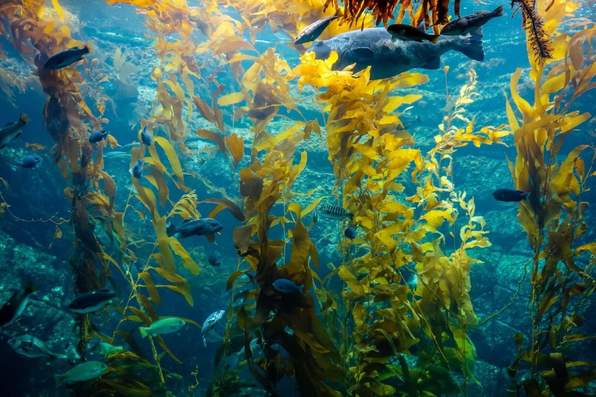
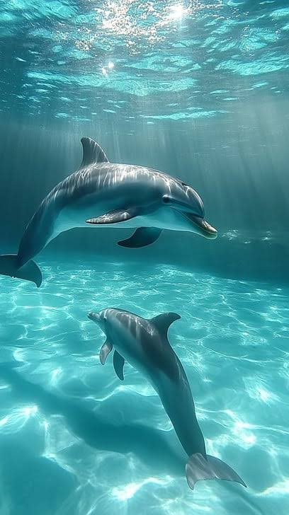
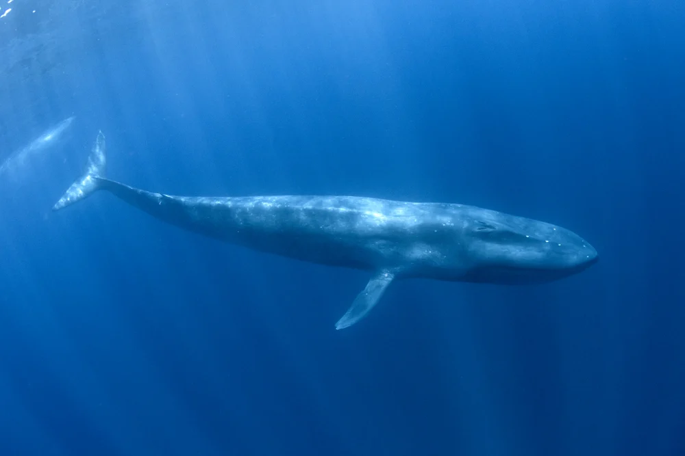
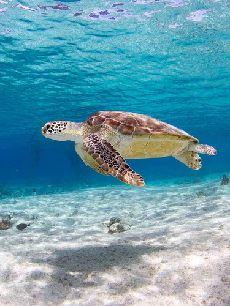
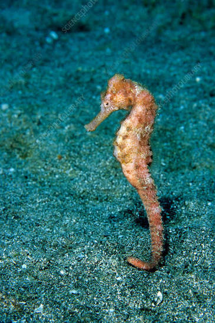
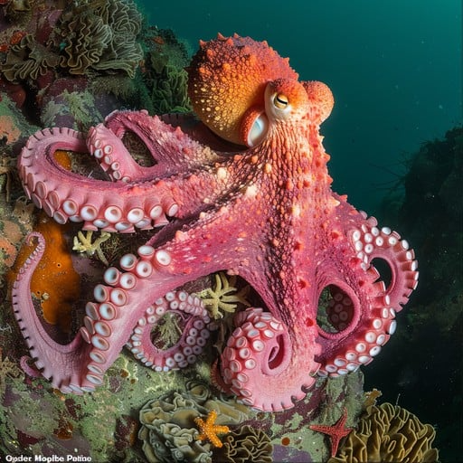
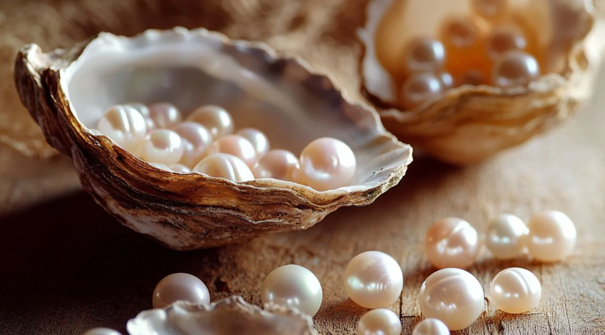

DeepSea
Explore Now
🌊 Explore the Ocean
The ocean is made up of many different underwater environments, each with its own unique features. On this page, you'll discover some of the most amazing places beneath the sea and learn what makes each one special.

Coral reefs are colorful underwater structures made by tiny
animals called corals. They provide food and shelter for
many fish and other sea creatures, making them one of the
busiest places in the ocean.

The deep ocean is the part of the sea that sunlight cannot reach. It is very dark, cold, and home to many unusual creatures that have adapted to live in these conditions.

Kelp forests are large areas of tall seaweed that grow in cool ocean waters. They provide shelter and food for many marine animals and help keep the ocean ecosystem healthy.

Shipwrecks are boats or ships that have sunk to the bottom of the ocean. Over time, they become homes for fish, corals, and many other sea creatures.

Underwater caves are natural tunnels and chambers found beneath the sea. They are known for their beautiful rock formations and are home to a variety of marine life.
🐠 Marine Life
The ocean is home to many amazing animals, each with unique features and ways of surviving. On this page, you'll meet some of the most fascinating marine creatures and learn a little about each one.

Dolphins are intelligent marine mammals known for their playful nature and friendly behavior. They live in groups called pods and communicate using clicks and whistles.

Whales are the largest animals on Earth and are mammals, not fish.
They breathe air through blowholes and are known for their long migrations and beautiful songs.

Sea turtles are large reptiles that spend most of their lives in the ocean. They travel long distances and return to the same beaches where they were born to lay their eggs.

Seahorses are small fish with a horse-like head and a curled tail. They swim slowly and are unique because the male seahorse carries and gives birth to the babies.

Octopuses are intelligent sea animals with eight arms and excellent problem-solving abilities. They can change their color and texture to hide from predators or catch prey.
🏛 Atlantis
According to legend, Atlantis was a great city that disappeared beneath the ocean many years ago. Today, it remains one of the world's greatest mysteries and continues to inspire stories and imagination

🏛 Ancient Underwater Ruins
Ancient underwater ruins are the remains of old buildings and structures found beneath the sea. They remind us of civilizations that may have existed long ago.

📦 Treasure Chests
Treasure chests are old wooden boxes that were once used to store valuable items such as gold, jewels, and coins. Many stories imagine them hidden deep beneath the ocean.

💎 Pearls
Pearls are smooth, shiny gems formed naturally inside certain oysters. They have been treasured for centuries because of their beauty and rarity.

🗿 Broken Statues
Broken statues are stone sculptures that have been damaged over time. They give us clues about the people and cultures that may have lived in the lost city.
📜 The Legend of Atlantis
The legend of Atlantis tells the story of a powerful island that is believed to have sunk beneath the sea. Although no one has proven that Atlantis existed, the story continues to fascinate people around the world.